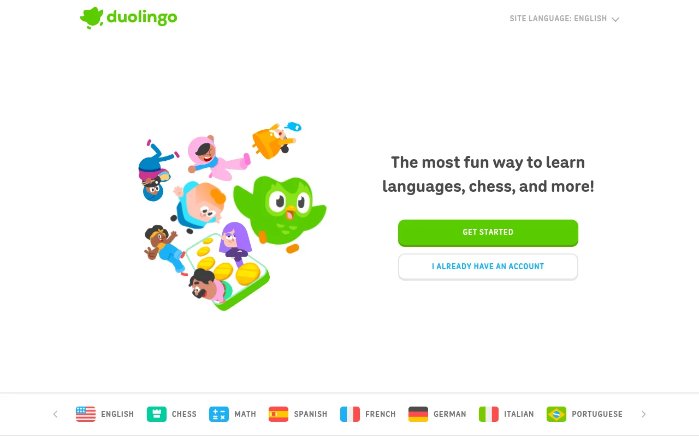
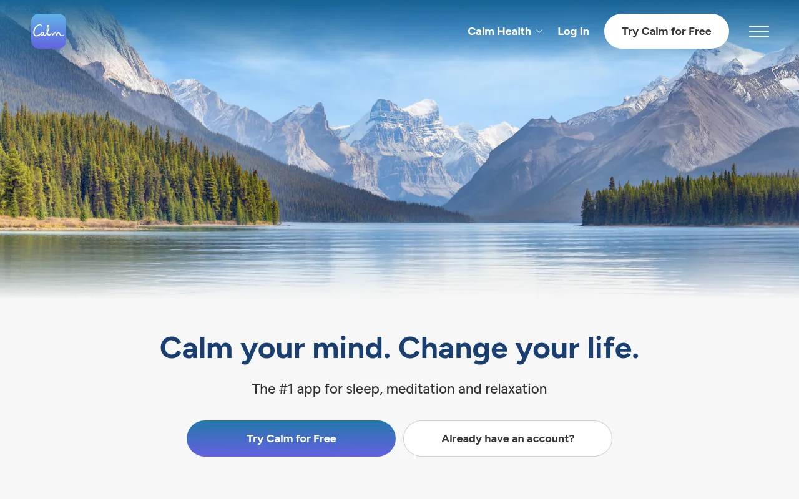
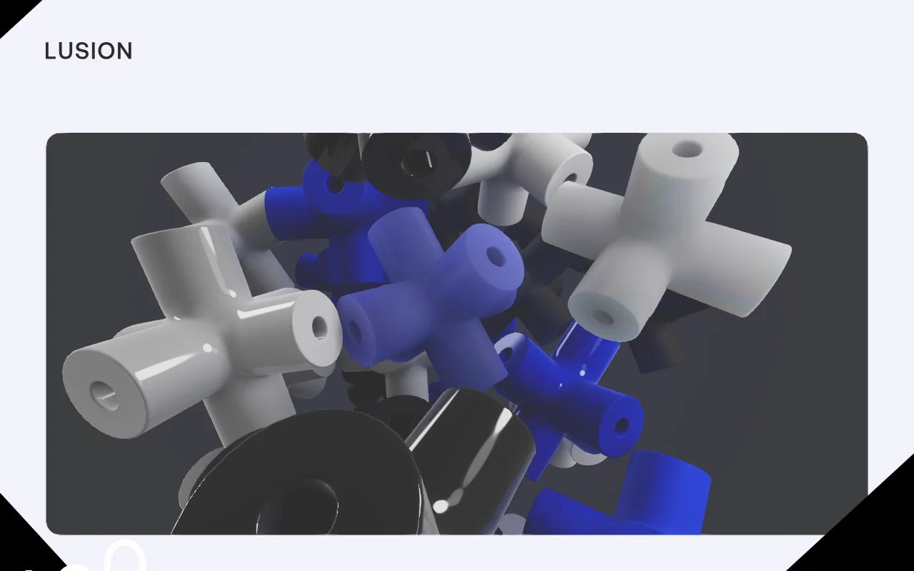

Блок Д · Факультатив · Модуль Д2
Картинки, персонажи, видео
Картинки для сайта и уроков, свой персонаж, картинки и короткие видео от нейросети, живые заставки. Главное здесь не «какую кнопку нажать», а как сделать, чтобы все картинки выглядели одной семьёй, как фото в хорошем семейном альбоме, и не выдавали, что их нарисовала машина на скорую руку.
Какие бывают изображения
| Вид | Когда брать | Риск |
|---|---|---|
| Фото | Люди, учитель, урок, реальные места. Вызывает доверие. | Сток выглядит фальшиво. |
| Иллюстрация | Объяснить идею, создать характер, детская версия. | Смесь стилей из разных наборов. |
| 3D-рендер | Предметы, «материал» бренда, твой фарфор и стекло. | Тяжёлый вес, «пластиковый» вид. |
| Иконки | Подписать действие или раздел. | Разная толщина линий, эмодзи вместо иконок. |
| Скриншот | Показать продукт: кабинет, задание. | Мелко и нечитаемо, если не увеличить фрагмент. |
Как это в жизни: виды изображений

1
2
3 4
4- Иллюстрация: нарисованные персонажи в одном стиле.
- Фотография: настоящая природа создаёт настроение.
- 3D-рендер: объёмные предметы, созданные на компьютере.
- Фото людей в разных по размеру рамках, с нарисованными облачками поверх: смешанный стиль.
Скриншоты настоящих сайтов, ноябрь 2026. Наведи на пункт или нажми его, и номер на картинке подсветится.
Мини-тест
Что убедительнее для блока «Учитель» на сайте?
Человек хочет знать, кто будет учить. Настоящее лицо отвечает на вопрос и вызывает доверие.
Форматы картинок: что выбрать
Картинки бывают двух видов, как рисунок бывает мозаикой или вышивкой по схеме.
- Растр (raster): картинка из маленьких цветных квадратиков-пикселей, как мозаика. Фото всегда растровые. Если сильно увеличить, видны квадратики и картинка «мылится».
- Вектор (vector): картинка из линий и формул, как схема «отсюда дуга туда». Её можно увеличить хоть до плаката, она останется чёткой. Так делают значки, логотипы, иллюстрации из простых форм.
| Формат | Что это простыми словами | Когда брать |
|---|---|---|
| JPG | Растр, хорошо сжимает фото, но без прозрачного фона | Фото на сайте и в презентации |
| PNG | Растр без потерь, умеет прозрачный фон | Скриншоты, картинки с прозрачностью, мелкая графика |
| WebP, AVIF | Новые форматы: та же картинка весит в 2–3 раза меньше | Фото и графика на сайте, чтобы грузилось быстрее |
| SVG | Вектор, по сути текст-чертёж | Значки, логотип, простые иллюстрации, анимированные линии |
| GIF | Старый формат коротких зацикленных анимаций, тяжёлый и с плохими цветами | Почти никогда; вместо него короткое видео MP4 или Lottie |
| Lottie | Векторная анимация в маленьком файле, можно управлять ей кодом | Персонаж радуется ответу, анимированные значки |
Почему картинку делают «в два раза больше»
У современных телефонов и ноутбуков очень плотный экран: в одной «точке» макета помещается 2–3 настоящих пикселя. Это называют ретина (retina). Если картинка 300 на 200 стоит на месте 300 на 200 точек, на таком экране она будет мутной. Поэтому её сохраняют в два раза больше, 600 на 400. В Figma при сохранении для этого выбирают 2x.
Мини-тест
Логотип школы нужен и на сайте, и на большом баннере. Какой формат?
Вектор увеличивается без потери чёткости.
Фото учителя для сайта. Что лучше?
Фото это растр. WebP легче, а размер 2x даёт чёткость на плотных экранах.
Одна серия: свет, цвет, ракурс
Картинки выглядят дорого, когда они серия, как фото в журнале: один свет, одна цветовая обработка, похожий угол съёмки, похожий фон. Даже фото с обычного телефона становятся цельными, если их одинаково обработать. Нажми «Одна обработка» и посмотри, как четыре разных картинки становятся семьёй.
Что держать одинаковым
- Свет: мягкий дневной из окна или студийный, но не вперемешку.
- Цвет: одна и та же цветовая обработка для всех, как один фильтр в Инстаграме (в программе Lightroom такой сохранённый фильтр называют «пресет»).
- Угол и расстояние: например, всё снято на уровне глаз и по пояс, а не одно сверху, другое снизу.
- Фон: однотонный или одна среда (стол, комната).
- Обрезка: у всех картинок одинаковая форма, например чуть вытянутый вверх прямоугольник 4:5 или широкий 16:9, и одинаковые скругления.
Как это в жизни: одна серия картинок
 1
1- Все картинки Duolingo нарисованы в одном стиле: одинаковые толстые формы, одни и те же цвета, одни и те же персонажи. Пролистай: серия держится на всей длинной странице.
Скриншоты настоящих сайтов, ноябрь 2026. Наведи на пункт или нажми его, и номер на картинке подсветится.
Мини-тест
На сайте 4 фото: тёмное вечернее, яркий сток, чёрно-белое и генерация в неоне. Как исправить быстрее всего?
Общий свет и цвет собирают серию. Картинку, которая не приводится к серии (неон среди дневного света), лучше заменить.
Запрос для генератора картинок
Нейросеть-художник (Midjourney, Flux, Kandinsky, Шедеврум, GPT Image и другие) рисует то, что ты описала, а всё остальное додумывает сама, причём самым банальным образом. Как художник, которому сказали «нарисуй чашку»: он нарисует какую-то чашку, на каком-то фоне, при каком-то свете. Поэтому хороший запрос описывает всё, что ты не хочешь отдавать на волю машины. Собери запрос из кусочков:
Мини-тест
Нужно 4 фото для сайта в одном стиле. Как писать запросы?
Повторяющийся блок стиля держит серию. Каждое новое описание света даёт новую картинку из другого мира.
ИИ-слоп в картинках
Картинки от нейросети легко узнать, и люди уже научились это делать. Как подделку сумки: сразу видно по швам. Вот признаки, по которым картинка себя выдаёт:
- Каша вместо текста и иероглифов: похоже на буквы, но не читается.
- Руки и мелочи: шесть пальцев, ручка сливается с ладонью, ложка растёт из чашки.
- Пластиковая кожа без пор, «глянцевые» лица, все одинаково красивые.
- Оранжево-бирюзовая гамма и свечение по краям, «эпичный» свет без причины.
- Слишком много деталей: всё резкое, всё блестит, глазу негде отдохнуть.
- Стереотипы: для Китая обязательно фонарики, драконы и пагоды.
- Нет точки зрения: картинка красивая, но непонятно, что она говорит.
Мини-тест
Сгенерированная обложка урока: красные фонарики, дракон, золотое свечение, надпись иероглифами. Что не так?
Это набор клише, которые генератор выдаёт по умолчанию. Для премиальной школы лучше один спокойный предмет и настоящий иероглиф шрифтом.
Персонаж
Персонаж, или маскот (как сова у Duolingo), хорошо работает в детской версии: он радуется правильному ответу, подсказывает, хвалит за серию дней. Чтобы его узнавали, нужны три вещи: простой силуэт (узнаётся даже чёрной тенью), характер в форме (круглое добрее острого) и набор эмоций. Пощёлкай эмоции и проверку силуэтом.
Лист персонажа
Прежде чем рисовать персонажа в уроках, делают его «паспорт», лист персонажа (character sheet): он спереди, вполоборота, сбоку и сзади; 6–8 эмоций; его цвета; что ему можно и нельзя (например, «никогда не злится на ученика»). Как инструкция для всех, кто будет его рисовать, чтобы он не менялся от картинки к картинке.
Как держать персонажа одинаковым в генерации
- Сначала получи одну удачную картинку и сохрани её как образец.
- Дальше проси рисовать по образцу: почти во всех нейросетях можно прикрепить картинку и написать, что это тот же персонаж (это называется character reference, «образец персонажа»).
- Держи одинаковый блок описания: «маленький круглый фарфоровый кот, бежевый, тонкий контур, без текстур».
- Проверяй мелочи: количество ушей, цвет, форма глаз. Генератор любит их «улучшать».
- Для уроков надёжнее нарисовать персонажа один раз (или заказать иллюстратору) и дальше собирать позы из частей.
Как это в жизни: персонаж бренда
 1
1- Сова Duo и компания учеников: персонаж узнаётся сам по себе, без логотипа.
- Оранжевое солнышко Headspace: простое лицо из двух дуг. Персонажу не нужно много деталей, чтобы быть живым.
Скриншоты настоящих сайтов, ноябрь 2026. Наведи на пункт или нажми его, и номер на картинке подсветится.
Мини-тест
Персонаж в каждом уроке выглядит немного по-разному. Что помогает больше всего?
Образец и одинаковое описание удерживают внешность. Без них генератор каждый раз придумывает персонажа заново.
Генерация видео
Нейросети для видео (Kling, Runway, Veo, Hailuo и другие) делают короткие ролики по 5–10 секунд. Лучше всего получается так: сначала сделать одну удачную картинку, а потом попросить её «оживить». Этот режим называется «из картинки в видео» (image to video).
Движение камеры
В запросе для видео главное описать движение: что двигается в кадре и как двигается камера. Как оператор в кино: «медленно подъезжаем к чашке». Одно спокойное движение выглядит дорого, три сразу выглядят как дешёвая реклама. Нажимай кнопки и смотри движения камеры.
- Лица и руки в движении генераторы портят чаще всего. Для заставки лучше предметы и пространство.
- Для фона сайта нужно видео, которое крутится по кругу незаметно: последний кадр совпадает с первым, как у бесконечной ленты. Это называется бесшовный цикл (seamless loop).
Мини-тест
Какой запрос для заставки даст результат лучше?
Одно простое движение и один предмет генератор делает чисто. Сложная сцена почти всегда ломается.
Живые заставки на сайт
Первый экран сайта можно «оживить» пятью способами. Они сильно отличаются по весу (как долго грузятся) и по тому, как ведут себя на телефоне. Как выбрать между открыткой, гифкой и фильмом.
| Способ | Как выглядит | Вес и скорость | Когда брать |
|---|---|---|---|
| Видео-фон | Настоящее или сгенерированное видео в цикле | Тяжело: 2–6 МБ, нужен кадр-заглушка | Атмосфера, место, предмет |
| Шейдер-градиент | Переливающийся цветной фон | Лёгкий файл, но нагружает видеокарту | Абстрактный «дорогой» фон |
| 3D (Spline, three.js) | Объект, который вращается и реагирует на курсор | Тяжело, на слабых телефонах тормозит | Главный герой бренда, твой куб |
| Lottie, Rive | Векторная анимация, персонаж | Лёгкая, чёткая на любом экране | Персонаж, иконки, иллюстрации |
| CSS и SVG | Пишущийся иероглиф, мягкое появление | Почти ничего не весит | Типографика, черты, простое движение |
Мини-тест
Для первого экрана AIKITAY с пишущимся иероглифом что легче и надёжнее всего?
Черты иероглифа это линии. SVG рисует их чётко, весит килобайты и работает везде.
Права и этика
- Фото учеников публикуются только с письменного согласия, для детей с согласия родителей. Лица детей на сайте лучше не показывать вовсе: снимай руки, тетради, экран.
- Стоки: смотри лицензию. Бесплатные (Unsplash, Pexels) обычно можно использовать на сайте, но нельзя продавать картинку как есть.
- Генерации: условия у каждого сервиса свои. Для коммерческого использования часто нужен платный тариф.
- Не генерируй «в стиле» конкретного живого художника или копию чужого персонажа: это и неэтично, и юридически рискованно.
- Шрифты: у шрифтов тоже есть права, как у музыки. Бесплатные с Google Fonts можно, но для сайта в России их скачивают и кладут на свой сервер, а не подгружают из-за границы.
Мини-тест
Хочешь поставить на сайт фото с урока, где видны лица детей группы. Что сделать?
Фото детей без согласия родителей публиковать нельзя. Кадры рук, тетрадей и экрана рассказывают про урок не хуже.
Практика
Где смотреть и учиться: раздел «Где искать» в находках, каталог стилей, галерея Behance (ищи «brand photography», «character sheet»).
Словарик модуля
Все слова этого модуля в одном месте. Пробегись глазами: если слово понятно и можешь объяснить его своими словами, нажми «Знаю». Галочка «показать только незнакомые» спрячет выученные, так удобно повторять. Итоговый тест по всем словам курса в конце курса.